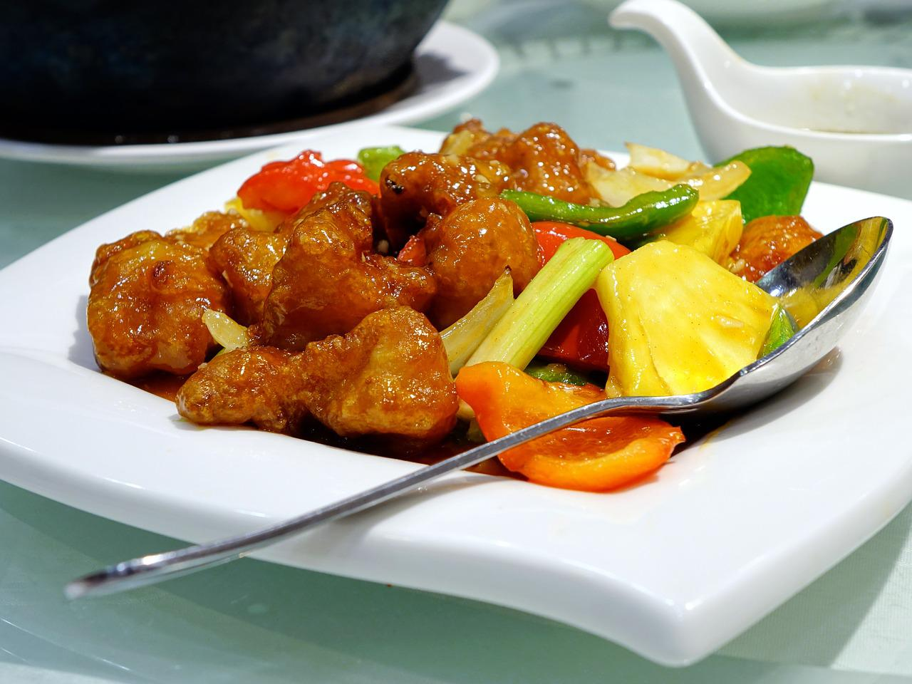
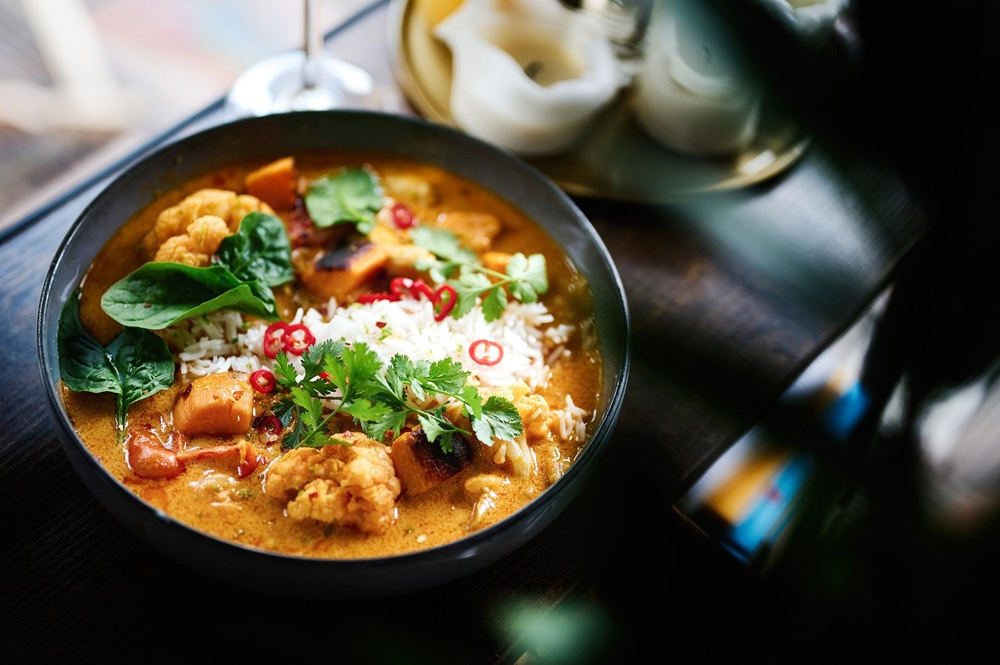
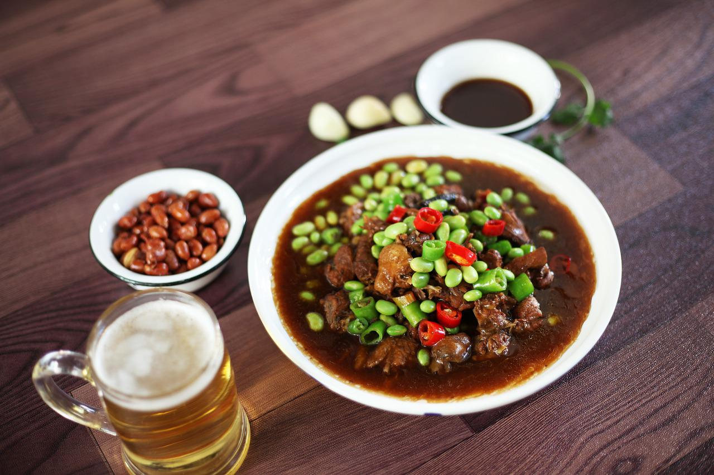
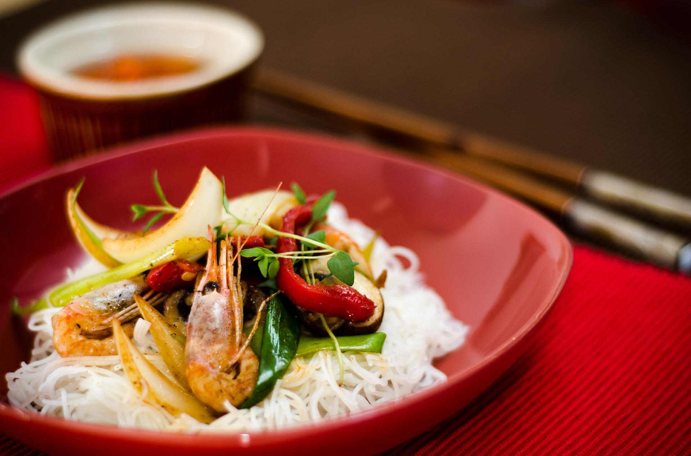

Main Course
All dishes have a choice of Chicken/Beef/Pork/King Prawns/Duck
Side Dish: Boiled Rice/Fried Rice/Fried Noodles
-
Sweet Sour Dishes
A meat of your choice cooked with vegetables in a sweet and sour sauce with a side dish of your choice. Perfect for people with a sweet tooth and children.
 -
King-Do Dishes
A meat of your choice cooked with vegetables in a sweet, fruity sauce with a side dish of your choice. Perfect for people with a sweet tooth and doesn't like sour food and children.
-
Kung Po Dishes
A meat of your choice cooked with vegetables in a sweet, mild, spicy sauce with a side dish of your choice. Perfect for people who like the spicy taste but can't eat spicy.
-
Green Pepper with Black Bean Sauce Dishes
A meat of your choice cooked with green pepper and vegetables in a sauce made from black beans and garlic with a side dish of your choice. This dish is served on a hot plate. Perfect for people who love garlic and doesn't like spicy or sweet.
-
Mushroom with Black Bean Sauce Dishes
A meat of your choice cooked with mushroom and vegetables in a slightly, spicy sauce made from black beans and garlic with a side dish of your choice. This dish is served on a hot plate. Perfect for people who love garlic and enjoys a little spice.
-
Honey Pepper Dishes
A meat of your choice cooked with vegetables in a sweet, spicy sauce with a side dish of your choice. Perfect for people who love spicy food.
-
Black Pepper Dishes
A meat of your choice cooked with vegetables in a black pepper sauce that is mildly spicy. Perfect for people who enjoy the spicy taste that is unique to pepper.
-
Chop Suey Dishes
A meat of your choice cooked with vegetables. Perfect for people who don't like something that is too spicy, sweet, salty or sour. Perfect choice if you feel like having something to eat but can't decide.
-
Curry Dishes
A meat of your choice cooked with onions in a curry sauce. The curry sauce can be made extra hot upon a customer's request.
 -
Szechuan Dishes
A meat of your choice cooked with vegetables and lots of chillis and spices in a spicy sauce. Perfect for people who can eat really spicy.
 -
Satay Dishes
A meat of your choice cooked with vegetables in a peanut sauce. Perfect for people who love the taste and flavour of nuts.
-
Peking Dishes
A meat of your choice cooked with vegetables in a sweet, spicy and sour sauce. Perfect for people who enjoys the sweet sour dish but want it spicy.
-
Chow Mein Dishes
A meat of your choice cooked with vegetables and noodles (a choice between egg or rice noodles). Can be made spicy upon customer's request.
 -
Fried Rice Dishes
A meat of your choice cooked with vegetables and fried rice.